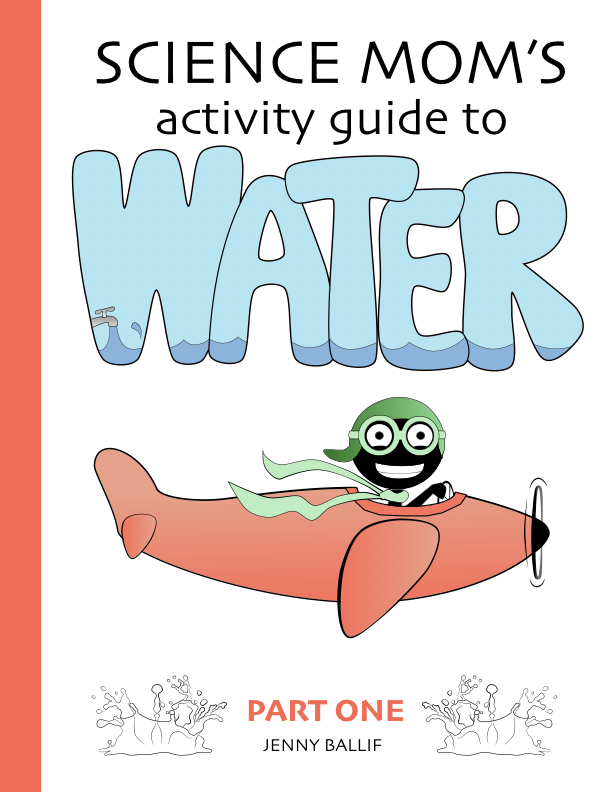
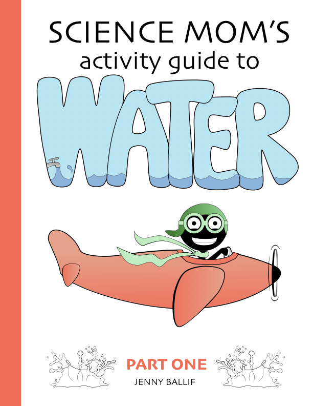

Each year I teach hundreds of science lessons as a volunteer in public school classrooms in Clark County. Join me as a sponsor to promote science education and have a tangible impact on thousands of elementary age students here in Nevada.
The Benefits
When you sponsor a classroom, you give:
- An engaging 30 minute science lesson.
- A science activity book for each child.
You receive:
- A thank you post from Science Mom on Twitter, Instagram, and Facebook.
- A personalized sticker on the back of each book with your name, company logo, contact info.
- Your name or company logo listed on my website.
The Cost
Science Mom books can be purchased here by clicking on the donate button below. The cost is $5 per book and the following sponsorship levels are available:
- Silver Sponsor:
-
- Give books to between 1 and 32 students ($5 to $160)
- Gold Sponsor:
-
- An entire classroom $165
- An entire grade level $825
- Platinum Sponsor:
-
- An entire school $3,500
All sponsors receive social media posts if they select the "public" option. To reach Gold or Platinum Sponsor status (which includes a personalized sticker with a company logo on each book), donate at one of the following levels:
- 33 books (classroom)
- 165 books (grade level)
- 700 books (whole school)
Donations may also be anonymous if you prefer.
The Books
 
Science Mom Activity Guides have comics, coloring pages, and engaging explanations of basic principles of chemistry and physics. Ideal for students age 7 to 12, the books are a fantastic tie-in to several of the Science Mom in-class presentations. By themselves, the books are an engaging and positive STEM resource, but when paired with a Science Mom visit? Even better.

Science Mom Activity Guides have comics, coloring pages, and engaging explanations of basic principles of chemistry and physics. Ideal for students age 7 to 12, the books are a fantastic tie-in to several of the Science Mom in-class presentations. By themselves, the books are an engaging and positive STEM resource, but when paired with a Science Mom visit? Even better.
How it Started
In 2013 I volunteered to teach a 15 minute science demonstration each week in my son’s first grade class. I’ve always loved science, and I am what most people would consider a “real” scientist, having a master’s degree in Plant Science with an emphasis in Molecular Biology. Before I began doing science demonstrations, the kids in that first grade class knew me as “Andrew’s Mom.” When I started bringing in science each week, the kids began to call me “Science Mom.” The name stuck and my job grew. Within a year I was visiting 10 classrooms a week, and now I have a YouTube channel (called Science Mom) and visit schools all over the Las Vegas valley.